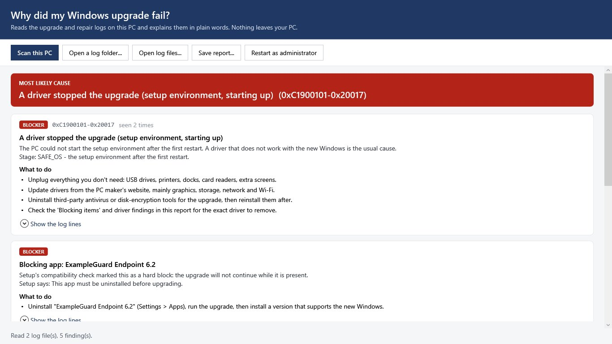

Upgrade Log Explainer
Why did my Windows upgrade fail? Free Windows app, works offline.

What it does
Windows writes down exactly why an upgrade or repair failed, in thousands of lines of logs. This app reads them and tells you the most likely cause and what to do, in plain words.
- Failed Windows 10 and 11 upgrades:
0xC1900101driver rollbacks, hardware requirements, blocking apps, low disk space, and the stage where setup stopped - Apps and drivers that block the upgrade, by name
- System File Checker (
sfc /scannow) and DISM repair results - Microsoft SetupDiag results, turned into plain steps
- The exact log lines behind every finding, and a report you can save
Private by design
No account, no ads, no internet connection needed. The app only reads the log files you point it at, and nothing leaves your PC. Privacy policy
Support
Questions or a log it could not explain? Email hello@haithameldesouky.com.